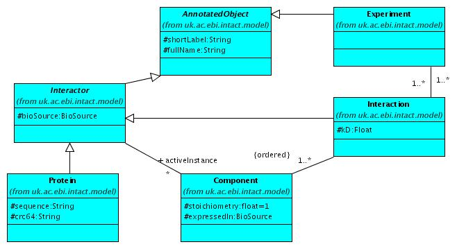
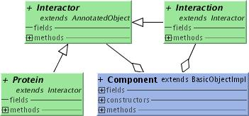
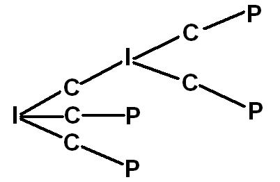

This little
tutorial gives a basic overview of how to use Intact. It
assumes that you have successfully
installed and configured your IntAct node. At
the
end of this tutorial you will have two little programs. The first one
shows you how to get information
about
the experiments, their interactions and their interactors. The
second one describes how to create, delete and update experiments,
interactions and interactors.
Be aware that these programs should be performed in a database that is
dedicated to it. We take no responsibility in altering existing
data.
The three main components in Intact are 'experiment', 'interaction' and
'interactor'
(see figure).

See also the whole Intact
model
An Experiment
object describes an experimental evidence that proves the existence of
one or more interactions. An Interaction object is an
interaction
of one or more interactors. An interactor is a protein, an interaction,
another
molecule or a
complex
participating in an interaction.
T he specific form of
an interactor in an interaction is described in the Component object
(see figure
below). An interactor is linked to a component which has a role and is
attached to an
interaction.
All these Objects are AnnotatedObjects where among other things the shortLabel
is defined.

A component(C) is a link between the interaction(I) and
the
interactor(P) (see figures). The component holds the role of the
interactor in the interaction (e. g. bait, prey, target, neutral ...)
The class CvComponentRole contains the different roles,
which are defined in the IntAct
controlled vocabularies.
An Interaction is an
Interactor, hence, it may be used as such in an other Interaction.

|
2. Getting
access to the database
|
For easy access to
the database we have the class IntactHelper.
It
gives you a set of high level methods that will allow you
to retrieve data from your IntAct node.
|
2.1 Instantiating IntactHelper
|
The IntactHelper()
provides a lot of useful methods like
search(java.lang.String
objectType,
java.lang.String searchParam,
java.lang.String searchValue)
(see
also 3.3).
The
IntactHelper is going to throw IntactException
if an error occurs. This section shows an example of how to catch them.
Be aware that you are also going to need it in the
following
sections, but in order to keep the code short, we won't show it
anymore.
Also keep in mind that you have to close the data source using closeStore(),
once the IntactHelper is no longer needed. If you close the data
source in the finally block you can be sure that the data source will
eventually be closed
whatever happens.
IntactHelper
helper = null;
try{
helper = new IntactHelper( );
}catch(IntactException
ie){
// ...
}finally
{
helper.closeStore();
}
|
|
2.2 Advanced IntactHelper
|
The advanced IntactHelper(DAOSource source) has
one argument which is a datasource object
from which a
connection
could be obtained. The ObjectBridgeDAOSource
gives access to the ObjectBridge and hides the complexity of the
relational mapping. DAO stands for 'Data Access Object'.
Be aware that the method to get the DAOSource object throws DataSourceException.
DAOSource
dataSource
=
DAOFactory.getDAOSource("uk.ac.ebi.intact.persistence.ObjectBridgeDAOSource");
helper = new IntactHelper(dataSource);
|
|
In the following
sections we will describe how to get information from
the database. For example how to get the name of the database, or how
to
fetch
all interactions related to a specific experiment.
3.1 Get
database information
|
In this section you will get to know how to find out who is connected
to the database and which database it is. To get the user name you call
the
IntactHelper
with getDbUserName()
and to get the name of the database use
the
method getDbName().
The code snippet will diplay those values.
Be aware to catch LookupException
and SQLException with using these
methods.
String user =
helper.getDbUserName();
String dbName = helper.getDbName();
System.out.println("User " + user + " is connected to database:
" + dbName + ".");
|
|
3.2
Search one Experiment
|
To get exactly one
experiment you can use the intactHelper calling the
method getObjectByLabel(java.lang.Class clazz,
java.lang.String label).
The argument 'clazz' is the object class
to search to and the argument
'label' as in AnnotatedObject.shortlabel
is
the shortlabel the object requires.
Keep in mind, that you have to check for NullPointerException
with using that method.
Object experiment = helper.getObjectByLabel(Experiment.class,
"ho");
if(experiment != null){
String ex =
experiment.toString();
System.out.println("EXPERIMENT: " + ex);
}else{
System.out.println("Sorry, experiment not found!");
}
|
|
3.3 Search a
collection of Experiments
|
To search for a collection of experiments you call the object
IntactHelper
with the method
search(java.lang.Class
clazz,
java.lang.String searchParam,
java.lang.String searchValue).
The first argument defines
the class of the object type to be searched in, it can be an
experiment,
an
interactor, an interaction or any other objects defined in the IntAct
model.
If you insert an invalid
object
you will get an IntactException. The second argument
defines the
attribute of the class on which is based the criteria of our search.
The last argument is the string of the search value (here:
"ho") which should be searched for. To search all possible
entries
use the asterisk or the null value. You could use the asterisk also in
combination
with a string, for example if you want to search all values starting
with
'ebi' you should use the string 'ebi*'.
In the following code snippet we are targeting the shortlabel of
experiment to be "ho".
However in the final code we are asking for the experiment (see 3.7) to be sure that the experiment exist
in the database.
The output will be the number of the experiments. The shortlabels of
the experiments
retrieved are printed out in the loop of the next section.
Collection
experiments = helper.search( Experiment.class, "shortlabel",
"ho"
);
System.out.println(experiments.size()
+ " experiment(s) found." );
|
|
3.4 Search Experiments Interactions
|
To get all interactions associated to an experiment you have to
retrieve an
Experiment
instance and call the method getInteractions().
In this example the output is going to be the short label of the
corresponding
experiment and the number of the associated interactions. The output of
the interaction's information is again
printed
out
in the loop of the next section.
for( Iterator iterator = experiments.iterator();
iterator.hasNext();
) {
Experiment exp = (Experiment)
iterator.next();
Collection interactions =
exp.getInteractions();
System.out.println("\n EXPERIMENT: " +
exp.getShortLabel() + " has " + interactions.size() + "
interaction(s)");
}
|
|
3.5 Search for the participants of an Interaction
|
This is largely identical to searching for all Interaction of an
experiment. From an
Interaction's instance, you can call the method getComponents().
The result will be a
collection
of components.
The shortlabels of the corresponding interactions and the number of the
participants are going to be
printed
out. The output of the participants of the Interaction is in the next
section.
for(
Iterator iterator1 = interactions.iterator(); iterator1.hasNext(); ) {
Interaction interaction = (Interaction)
iterator1.next();
Collection components = interaction.getComponents();
System.out.println("\t INTERACTION: " +
interaction.getShortLabel() + " has " + components.size()
+ " participants");
}
|
|
3.6 Detect the type
of the Interactor
|
At the moment we have two types of interactors either Protein
or Interaction.
It is planned to implement some new type of Interactor such as DNA, RNA
and small molecules. To specify the interactors type
we took the interactors class name. The value
displayed will
be the interactors type, the shortlabel of the interactor
and the interactors role.
for(
Iterator iterator2 = components.iterator(); iterator2.hasNext(); ) {
Component component = (Component) iterator2.next();
Interactor interactor = component.getInteractor();
String type = null;
if( interactor instanceof Protein ) {
type = "PROTEIN";
} else if( interactor instanceof Interaction ) {
type = "INTERACTION";
} else {
type = interactor.getClass().getName();
}
System.out.println( "\t\t " + type + "\t" +
interactor.getShortLabel() +
"\t Role:" +
component.getCvComponentRole().getShortLabel() );
}
|
|
Putting all these together with a bit extra code we get the short
program
below.
This program askes for an experiment to search for. If the given
experiment is not in the database, it will print out a list of existing
experiments. If the experiment exist in the database it will print out
a summary of the data found in your IntAct node, a
list of the
experiments, that are specified from the user,
their interactions and their interactors with the corresponding role.
package uk.ac.ebi.intact.tutorial;
import uk.ac.ebi.intact.business.*;
import uk.ac.ebi.intact.model.*;
import org.apache.ojb.broker.accesslayer.LookupException;
import java.util.*;
import java.sql.SQLException;
import java.io.*;
public class QueryTutorial {
public static void main(String[] args) throws
IntactException {
// the non-argument
Intact-Helper
IntactHelper helper = null;
helper = new IntactHelper();
// get user name and db name
try {
String user = helper.getDbUserName();
String dbName = helper.getDbName();
System.out.println("User " + user + " is connected to database: " +
dbName + ".");
} catch (LookupException
lupe) {
lupe.printStackTrace();
} catch (SQLException sqle) {
sqle.printStackTrace();
}
//get only one specific
experiment
Object experiment =
helper.getObjectByLabel(Experiment.class, "ho");
if (experiment != null) {
String ex = experiment.toString();
System.out.println("EXPERIMENT: " + ex);
} else {
System.out.println("Sorry, experiment not found!");
}
// ask for a specific
experiment
String str = "";
try {
BufferedReader in = new BufferedReader(new
InputStreamReader(System.in));
System.out.println("Please specify the name of the experiment (or press
Enter to get all experiments): ");
str
= in.readLine();
} catch (IOException e) {
e.printStackTrace();
}
String expStr = "*" + str +
"*";
// get a collection of
experiments with the specified name
Collection experiments =
helper.search(Experiment.class, "shortlabel", expStr);
// check if there is an
experiment with that name
// if not the list of
available experiment are given
if (experiments.size() == 0)
{
System.out.println("You have entered the experiment: " + str);
System.out.println("Unfortunately it is not in your database!");
System.out.println("The following experiments are in your database: ");
Collection allExperiments = helper.search(Experiment.class,
"shortlabel", null);
for
(Iterator iterator = allExperiments.iterator(); iterator.hasNext();) {
Experiment exp = (Experiment) iterator.next();
System.out.println("\t" + exp.getShortLabel());
}
} else {
System.out.println(experiments.size() + " experiment(s)
found.");
//
search experiments interacions and print out the experiments shortlabels
for
(Iterator iterator = experiments.iterator(); iterator.hasNext();) {
Experiment exp = (Experiment) iterator.next();
Collection interactions = exp.getInteractions();
System.out.println("\n EXPERIMENT: " + exp.getShortLabel() + " has " +
interactions.size() +
"interaction(s)");
// search interactions interactors and print out the interactions
shortlabel
for (Iterator iterator1 = interactions.iterator();
iterator1.hasNext();) {
Interaction interaction = (Interaction) iterator1.next();
Collection components = interaction.getComponents();
System.out.println("\t INTERACTION: " + interaction.getShortLabel() + "
has " + components.size()
+ " participants");
for (Iterator iterator2 = components.iterator(); iterator2.hasNext();) {
Component component = (Component) iterator2.next();
Interactor interactor = component.getInteractor();
String type = null;
if (interactor instanceof Protein) {
type = "PROTEIN";
} else if (interactor instanceof Interaction) {
type = "INTERACTION";
} else {
type = interactor.getClass().getName();
}
System.out.println("\t\t " + type + "\t" +
interactor.getShortLabel() +
"\t Role:" +
component.getCvComponentRole().getShortLabel());
}
}
}
}
}
}
|
|
The output of that short program above could look like that example
below.
User
'intactuser'
is connected to database: intactdb.
EXPERIMENT:
Experiment [AC: EBI-13 Shortlabel: ho BioSource: yeast
CvIdentification: western blot
CvInteraction: experimental
Interactions (ho-94, ho-1, ho-5, ho-60, ho-7, ho-8, ho-10, )
]
Please
specify the name of the experiment (or press Enter to get all
experiments):
ho
We have 1
experiment(s) found.
EXPERIMENT:
ho has 7 interaction(s)
INTERACTION: ho-94 has 19 participants
PROTEIN
erb1_yeast Role:bait
PROTEIN
brx1_yeast Role:prey
PROTEIN
yej2_yeast Role:prey
PROTEIN
nop2_yeast Role:prey
PROTEIN
if6_yeast Role:prey
PROTEIN
pib2_yeast Role:prey
PROTEIN
fkb4_yeast Role:prey
PROTEIN
scs2_yeast Role:prey
PROTEIN
pesc_yeast Role:prey
PROTEIN
ebp2_yeast Role:prey
PROTEIN
nog1_yeast Role:prey
PROTEIN
q08975 Role:prey
PROTEIN
q07896 Role:prey
PROTEIN
exg1_yeast Role:prey
PROTEIN
rl73_yeast Role:prey
PROTEIN
ynl0_yeast Role:prey
PROTEIN
q04031 Role:prey
PROTEIN
yhl2_yeast Role:prey
PROTEIN
yka9_yeast Role:prey
INTERACTION: ho-1 has 2 participants
PROTEIN
cc13_yeast Role:bait
PROTEIN
cyph_yeast Role:prey
...
|
|
The next sections will show you how to edit the database, for
example
how
to create a new experiment, or how to insert new interactions.
Keep in
mind
that you need write access to modify the database.
We are again going to use the IntactHelper from section 2.1.
The methods we are going to use are create(java.lang.Object obj),
update(java.lang.Object obj),
startTransaction(int transactionType)
and
finishTransaction(int transactionType).
The
method
'create' creates a new entry in the database for the given object. It
goes without saying that it will it works only if the object given in
parameter is correctly initialised. In
that process the object gets an Accession Number
(AC) assigned automatically. The method 'update'
updates the object in the
database. And the methods 'startTransaction' and 'finishTransaction'
respectively
open and close a transaction. The 'transactionType' argument
of 'startTransaction' can either be in object level choosing
'OBJECT_TX' or in the database level choosing 'JDBC_TX'. The object
level transaction updates an object graph that is you have for example
an experiment with an interaction and you modified the interaction
type, it will also be updated by updating the experiment. If you choose
the database level transaction it will update only one object at a
time. In our example it would only update the experiment, but not the
interaction. It is a low level transaction, which relies on the
underlying Database Management System.
The default
value is the database level.
The transaction allows you to rollback (undo) with the method undoTransaction() if something goes
wrong
during the insertion of the data. But it is not necessary to insert a
new entry into the database. In the following sections we won't use the
transaction methods. It might be usefull to put it around several write
operations and handle the rollback if an exception is thrown for
instance. The following code snippet shows how it could look like.
|
try{
helper.startTransaction(BusinessConstants.JDBC_TX);
// Exception thrown!!
helper.finishTransaction();
}catch(IntactException
e){
if(helper.isInTransaction()){
helper.undoTransaction();
}
}
|
Note:
the method IntactObject.setAc(
String ac ) is only there because OJB needs it to set the AC of an
object you are trying to persist. That method is not meant to be used
by a developer.
To
instantiate an
Experiment(Institution owner,
java.lang.String shortLabel,
BioSource source)
you have to create or retrieve from the database an
Institution(java.lang.String shortLabel)
and a
BioSource(Institution owner,
java.lang.String shortLabel,
java.lang.String taxId)
|
In this section we show how to create a new
Institution(java.lang.String shortLabel).
The
argument 'shortlabel' is used to refer to the Institution. To create a
new entry of this Institution in the database, we call the IntactHelper
with the 'create' method.
If you want to create an object you should first check if the object is
already persisten in the database
private
Institution createInstitution(String shortlabel) throws IntactException
{
owner = new Institution(shortlabel);
helper.create(owner);
return owner;
}
|
However you don't necessarily have to create a new Institution. You can
also call the IntactHelper
with the method getInstitution() which gives you the
default Institution
according to the configuration in the file config/Institution.properties.
Institution
owner = owner =
helper.getInstitution();
|
|
To create a
BioSource(Institution owner,
java.lang.String shortLabel,
java.lang.String taxId)
it
is important that the Institution is already created. The 'owner' is
the Institution which owns the BioSource, the 'shortlabel' is used to
identify the BioSource and the 'taxId' is the NCBI taxID, which must be
unique if defined but can also be null.
private BioSource createBioSource(Institution owner, String
shortLabel, String taxID) throws IntactException {
organism = new BioSource(owner, shortLabel, taxID);
helper.create(organism);
return organism;
}
|
|
4.1.3 Create an
Experiment
|
Finally if you have created an Institution and a BioSource, you can
create an
Experiment(Institution owner,
java.lang.String shortLabel,
BioSource source).
The
'institution' is the Institution which owns the Experiment, the
'shortlabel' is used to refer to the Experiment and the 'source' is the
organism of the experimental data.
private
void createExperiment(Institution owner, String
shortLabel, BioSource organism) throws IntactException {
experiment = new Experiment(owner, shortLabel, organism);
helper.create(experiment);
}
|
|
4.2 Create an Interaction
|
Interaction
is an interface, hence you need its implementation which is InteractionImpl
to create an Interaction. The constructor
InteractionImpl(java.util.Collection experiments,
java.util.Collection components,
CvInteractionType type,
java.lang.String shortLabel,
Institution owner)
needs a collection of Experiments which is a list of evidence for that
Interaction, a
collections of Component objects,
each referencing an Interactor, e.g. a Protein, an Interaction
type (e.g. covalent binding), a name to refer to the Interaction
and
an Institution which owns the Interaction.
First we create an empty collection of experiments and add the
created experiment.
Right now we don't have any components created and to create a
component
we need an existing interaction. Therefore we instantiate the
interaction
with an empty collection of components and update it later.
We take the Interaction type out of the existing entries of the
database by using the IntactHelper (see section
private
void createInteraction(Experiment experiment, String shortLabel,
Institution owner) throws IntactException {
Collection experiments = new ArrayList();
experiments.add(experiment);
Collection components = new ArrayList();
CvInteractionType type = (CvInteractionType)
helper.getObjectByLabel(CvInteractionType.class, "aggregation");
interaction = new InteractionImpl(experiments, components, type,
shortLabel, owner);
helper.create(interaction);
}
|
|
The class Protein
is an abstract class, hence you have to instantiate a Protein using the
constructor ProteinImpl(Institution owner,
BioSource source,
java.lang.String shortLabel).
The 'owner' is the
Institution which owns the Interaction, the 'source' is the organism to
which belongs that protein and the 'shortlabel' is the
memorable label used to refer to the Interactor.
Protein protein1 = new ProteinImpl(owner, organism, "protein1");
Protein protein2 = new ProteinImpl(owner, organism, "protein2");
Protein protein3 = new ProteinImpl(owner, organism, "protein3");
helper.create(protein1);
helper.create(protein2);
helper.create(protein3);
|
Later we will show how to import automatically a protein from UniProt (see section
4.6).
|
Bear in mind if you want to create a
Component(Institution owner,
Interaction interaction,
Interactor interactor,
CvComponentRole role)
you need an Institution, Interaction and Interactor which have an AC
number in the database, that means they have to be created already. The
Component needs an Institution which is the owner, an
Interaction this component is part of, an Interactor that this
Component represents in the Interaction and a CvComponentRole which is
the biological/experimental role played by this Component in the
Interaction experiment. The 'role' is a controlled vocabulary which
should already be in the database. You can fetch it out of the
database using the IntactHelper (see also
Component
component1;
Component component2;
Component component3;
CvComponentRole bait = (CvComponentRole)
helper.getObjectByLabel(CvComponentRole.class, "bait");
CvComponentRole
prey = (CvComponentRole) helper.getObjectByLabel(CvComponentRole.class,
"prey");
component1
= new Component(owner, interaction, protein1, prey);
component2
= new Component(owner, interaction, protein2, prey);
component3
= new Component(owner, interaction, protein3, bait);
helper.create(component1);
helper.create(component2);
helper.create(component3);
|
|
4.5
Update the
Interaction
|
To complete the creation of the Interaction (we created it with an
empty collection of components 4.2)
we
need
to add the components and update the interaction. Therefore we again
use
the IntactHelper.
interaction.addComponent(component1);
interaction.addComponent(component2);
interaction.addComponent(component3);
helper.update(interaction);
|
|
4.6 Import Proteins from UniProt
|
It is possible to update the IntAct database with proteins by using
the utility class UpdateProteins.
Previously, entries sharing identical sequences and function were
merged
across species within Swiss-Prot. Although this is no longer the case
in UniProt,
as a
result of this some entries share a common secondary accession number.
For example the UniProt secondary Accession number 'P21118'
is present in entries from 3 organisms (dog, human, and mouse).
If there are more
than one
organism, one IntAct Protein
will be created for each organism. In case splice variants exist in a
Protein entry, they are created in IntAct as Protein and linked via Xref
to the original Protein.
You create a protein factory with the constuctor UpdateProteins(IntactHelper helper)
and call the method insertSPTrProteins(java.lang.String proteinAc).
If no error occur it inserts one protein per protein entry retrieved.
private
void importProtein(String proteinAc) throws
UpdateProteinsI.UpdateException{
UpdateProteinsI proteinFactory = new UpdateProteins(helper);
proteinFactory.insertSPTrProteins(proteinAc);
}
|
|
4.7 Delete a
Database entry
|
If you want to delete a database entry (eg experiment, interaction,
protein), you need to specify the object you would like to delete.
You can collect them either with the method 'search' to get a
collection of all possible objects (see also 3.3)
or with the method 'getObjectByLabel' to get exactly one object (see
also 3.2).
In this example we are going to
delete the experiment (exp), which we have created before (see also 4.1)
.
|
Putting all these together with a little extra code we get the program
below. Note that this little program will insert the data into the
database and delete it immediately after creating it, so you would not
see extra data
in your database. If you don't want to delete the data right after
creating it, uncomment the 'deleteData()' method in the main method.
To
prove that you really have filled the database use the class 'QueryTutorial'
of the section above and search for the experiment 'tutorial'.
In order to keep the code short, we deleted the javadoc comments from
that code below, but you will find it in the original
source code.
package uk.ac.ebi.intact.tutorial;
import uk.ac.ebi.intact.business.*;
import uk.ac.ebi.intact.model.*;
import uk.ac.ebi.intact.util.*;
import java.util.*;
import java.sql.SQLException;
import org.apache.ojb.broker.accesslayer.LookupException;
public class PersistenceTutorial {
private IntactHelper helper;
private Institution owner;
private BioSource organism;
private Experiment experiment;
private Interaction interaction;
private Component component1;
private Component component2;
private Component component3;
public PersistenceTutorial(IntactHelper helper) {
this.helper = helper;
}
private BioSource createBioSource(Institution owner,
String shortLabel, String taxID) throws IntactException {
organism = new
BioSource(owner, shortLabel, taxID);
helper.create(organism);
return organism;
}
private void createExperiment(Institution owner,
String shortLabel, BioSource organism) throws IntactException {
experiment = new
Experiment(owner, shortLabel, organism);
helper.create(experiment);
}
private void createInteraction(Experiment
experiment, String shortLabel, Institution owner) throws
IntactException {
Collection experiments = new
ArrayList();
experiments.add(experiment);
Collection components = new
ArrayList();
CvInteractionType type =
(CvInteractionType) helper.getObjectByLabel(CvInteractionType.class,
"aggregation");
interaction = new
InteractionImpl(experiments, components, type, shortLabel, owner);
helper.create(interaction);
}
private void createInteractors(Institution owner,
BioSource organism, Interaction interaction)
throws IntactException {
Protein protein1 = new
ProteinImpl(owner, organism, "protein1");
Protein protein2 = new
ProteinImpl(owner, organism, "protein2");
Protein protein3 = new
ProteinImpl(owner, organism, "protein3");
helper.create(protein1);
helper.create(protein2);
helper.create(protein3);
// create CvComponentRole's
CvComponentRole bait =
(CvComponentRole) helper.getObjectByLabel(CvComponentRole.class,
"bait");
CvComponentRole prey =
(CvComponentRole) helper.getObjectByLabel(CvComponentRole.class,
"prey");
//create components
component1 = new
Component(owner, interaction, protein1, prey);
component2 = new
Component(owner, interaction, protein2, prey);
component3 = new
Component(owner, interaction, protein3, bait);
helper.create(component1);
helper.create(component2);
helper.create(component3);
}
private void updateInteraction() throws
IntactException {
// add the components to the
existing interaction
interaction.addComponent(component1);
interaction.addComponent(component2);
interaction.addComponent(component3);
// update the interaction
helper.update(interaction);
}
private void importProtein(String proteinAc) throws
UpdateProteinsI.UpdateException {
UpdateProteinsI
proteinFactory = new UpdateProteins(helper);
proteinFactory.insertSPTrProteins(proteinAc);
}
private void insertData() throws
UpdateProteinsI.UpdateException {
try {
owner = helper.getInstitution();
organism = createBioSource(owner, "drosophila", "7215");
createExperiment(owner, "tutorial", organism);
createInteraction(experiment, "interaction", owner);
createInteractors(owner, organism, interaction);
updateInteraction();
importProtein("P21181");
} catch (IntactException ie)
{
ie.printStackTrace();
if
(ie.getRootCause() != null) {
ie.printStackTrace();
}
}
}
private void deleteExperiment(String shortlabel)
throws IntactException {
Collection experiments =
helper.search(Experiment.class.getName(), "shortlabel", shortlabel);
for (Iterator iterator =
experiments.iterator(); iterator.hasNext();) {
Experiment exp = (Experiment) iterator.next();
helper.delete(exp);
}
}
private void deleteInteraction(String shortlabel)
throws IntactException {
Collection interactions =
helper.search(Interaction.class.getName(), "shortlabel", shortlabel);
for (Iterator iterator =
interactions.iterator(); iterator.hasNext();) {
Interaction interaction = (Interaction) iterator.next();
helper.delete(interaction);
}
}
private void deleteInteractor(String shortlabel)
throws IntactException {
Collection interactors =
helper.search(Interactor.class.getName(), "shortlabel", shortlabel);
for (Iterator iterator =
interactors.iterator(); iterator.hasNext();) {
Interactor interactor = (Interactor) iterator.next();
helper.delete(interactor);
}
}
private void deleteData() throws IntactException {
deleteExperiment("tutorial");
deleteInteraction("interaction");
deleteInteractor("protein*");
}
public static void main(String[] args) throws
IntactException, UpdateProteinsI.UpdateException {
IntactHelper helper = null;
try {
helper = new IntactHelper();
//
get database information
String user = helper.getDbUserName();
String dbName = helper.getDbName();
System.out.println("User " + user + " is connected to database: " +
dbName + ".");
PersistenceTutorial tutorial = new PersistenceTutorial( helper );
//insert data
tutorial.insertData();
//
and delete the data again
tutorial.deleteData();
} catch (LookupException
lupe) {
lupe.printStackTrace();
} catch (SQLException sqle) {
sqle.printStackTrace();
} finally {
if(
helper != null ) {
helper.closeStore();
}
}
}
}
|
|
- Be aware that if you want to create an object,
the arguments of
that object must be created first.
- Short labels
have to be unique in controlled vocabulary classes, you cannot create a
new CvObject with the same shortLabel as an existing CvObject of the
same class.
- Calling
helper.create on an object that is already created will trigger an
error.
|
|
|
 |
|
|
|